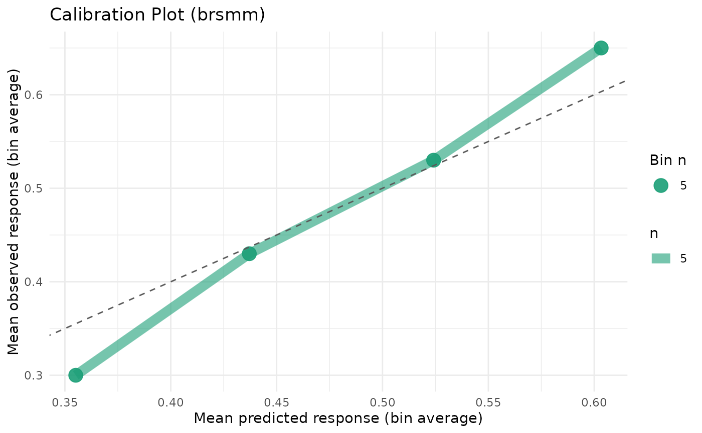
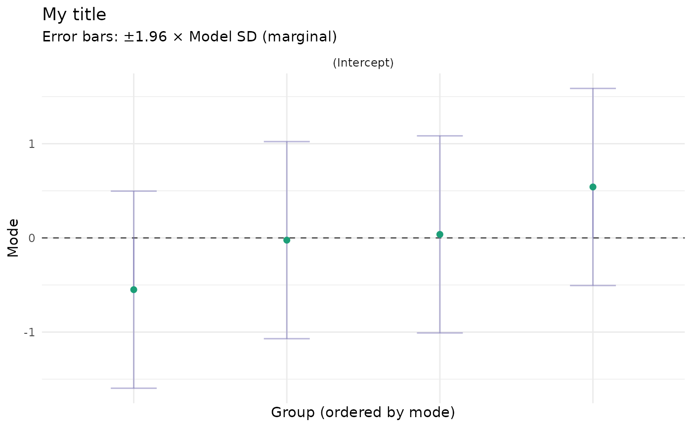
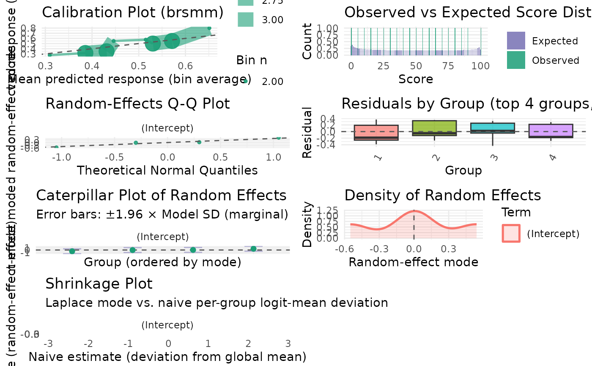

Produces ggplot2 diagnostics tailored to mixed beta interval models.
Usage
# S3 method for class 'brsmm'
autoplot(
object,
type = c("calibration", "score_dist", "ranef_qq", "residuals_by_group",
"ranef_caterpillar", "ranef_density", "ranef_pairs", "shrinkage", "all"),
bins = 10L,
scores = NULL,
residual_type = c("response", "pearson"),
max_groups = 25L,
title = NULL,
xlab = NULL,
ylab = NULL,
ncol = 2L,
theme = ggplot2::theme_minimal(),
...
)Arguments
- object
A fitted
"brsmm"object.- type
Plot type. One of
"calibration","score_dist","ranef_qq","residuals_by_group","ranef_caterpillar","ranef_density","ranef_pairs","shrinkage", or"all"(produces all panels in a single grid).- bins
Number of bins for
"calibration".- scores
Optional integer vector of scores for
"score_dist". Defaults to all scores from0toncuts.- residual_type
Residual type for
"residuals_by_group"; passed toresiduals.brsmm.- max_groups
Maximum groups in
"residuals_by_group".- title
Optional character: override the plot title via
ggplot2::labs(title = ...). Ignored whentype = "all".- xlab
Optional character: override the x-axis label. Ignored when
type = "all".- ylab
Optional character: override the y-axis label. Ignored when
type = "all".- ncol
Number of columns for the grid when
type = "all". Defaults to 2.- theme
A ggplot2 theme object (e.g.,
ggplot2::theme_bw()) or a theme function. Applied to every panel. Defaults toggplot2::theme_minimal().- ...
Additional arguments forwarded to
ggplot2::theme()and applied on top oftheme. Use named theme element arguments, e.g.legend.position = "none".
Value
A ggplot2 object, or (when type = "all") invisibly
returns the list of all panels after rendering the grid.
Examples
# \donttest{
dat <- data.frame(
y = c(
0, 5, 20, 50, 75, 90, 100, 30, 60, 45,
10, 40, 55, 70, 85, 25, 35, 65, 80, 15
),
x1 = rep(c(1, 2), 10),
id = factor(rep(1:4, each = 5))
)
prep <- brs_prep(dat, ncuts = 100)
#> brs_prep: n = 20 | exact = 0, left = 1, right = 1, interval = 18
fit_mm <- brsmm(y ~ x1, random = ~ 1 | id, data = prep)
ggplot2::autoplot(fit_mm, type = "calibration", bins = 4)

ggplot2::autoplot(fit_mm,
type = "ranef_caterpillar",
title = "My title", ylab = "Mode"
)

ggplot2::autoplot(fit_mm, type = "all")
#> Warning: span too small. fewer data values than degrees of freedom.
#> Warning: pseudoinverse used at -2.8296
#> Warning: neighborhood radius 3.0128
#> Warning: reciprocal condition number 0
#> Warning: There are other near singularities as well. 8.5891
#> Warning: NaNs produced

# }